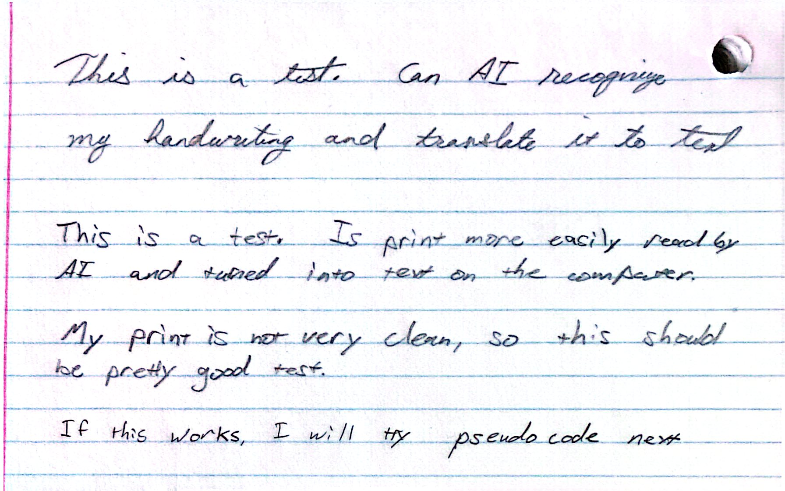
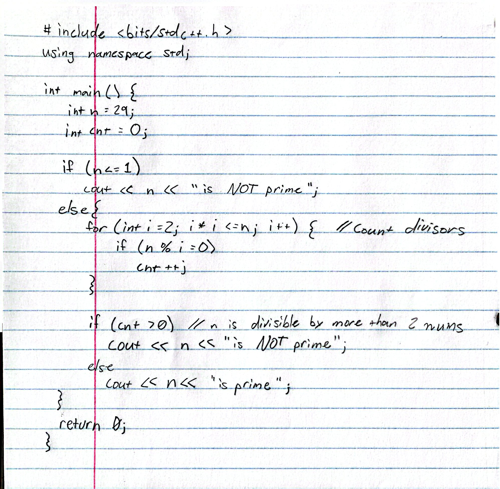

I installed ollama and gemma4:26b as a test of running an LLM locally on the Weber server.
My summary is that it performed phenomenally and that I was very surprised at how well it did with the model size, though the Weber server are very clearly powerful.
Testing Handwriting Transliteration with Gemma4:26b
I ran the same handwriting test that I did on gemma4-e2b, and on the “Big 3” proprietary models
The results were identical to the proprietary models

This is a test. Can AI recognizemy handwriting and translate it to textThis is a test. Is print more easily read byAI and turned into text on the computer.My print is not very clean, so this shouldbe pretty good test.If this works, I will try pseudo code next
This is fairly uninteresting, as a model this size should accurately do OCR based on gemma4-e2b doing well at it
I also did the pseudocode-to-text.jpg test and it did equivalently well
Testing Full Syntax C++ Handwriting to Text
Modelfile creation
I created a Modelfile that allows you to “bake in” certain parameters like temperature or top_p and certain system instructions that will alter the behavior of the model
Any PARAMETER in a Modelfile can be set at runtime, but doing this allows it to automatically be set
My Modelfile is very simple, but it can already be seen how it alters its behaviour (and not always in a good way)
The Handwriting Code Sample

code-to-text
Handwritten C++ to Text without Modelfile config
For both tests I will have “thinking” on
#include <bits/stdc++.h>usingnamespace std;//int main() {int n =29;int cnt =0;if(n <=1){ cout << n <<" is NOT prime";}else{// Loop to count divisorsfor(int i =2; i * i <= n; i++){if(n % i ==0){ cnt++;}}if(cnt >0)// n is divisible by more than 2 nums cout << n <<" is NOT prime";else cout << n <<" is prime";}return0;//}
29 is prime
0
The above snippet should also have run at the time of the compilation of the notebook
I had to manually comment out the main definition and closing bracket because the interpreter doesn’t like the main() definition for some reason
Handwritten C++ to Text WITH Modelfile config
I will not be attempting to run the code here
I also want to note that it initially output it without tabs, but after I asked for it to put the tabs in “like in the image” it did.
#include <bits/stdc++.h>usingnamespace std;int main(){int n =29;int cnt =0;if(n <=1) cout << n <<" is NOT prime";else{for(int i =2; i * i <= n; i++){// Count divisorsif(n % i ==0) cnt++;}if(cnt >0)// n is divisible by more than 2 nums Cout << n <<" is NOT prime";else Cout << n <<" is prime";}return0;}
Notes on the output
No Modelfile
- The config-less model automatically added curly braces to the single line if statements
- It correctly interpreted the written handwriting
- It explained (not included here) what the algorithm was doing
- Even the Big O for the solution O(\(\sqrt{n}\)) With Modelfile
- Did not add curly braces or fix issues (as specified by the config “do not fix bugs”)
- It did incorrectly interpret cout as Cout, and it interpretted its mistake in reading it at a mistake on behalf of the student: The user's code has `Cout` (capital C). I must not fix this.
- From the “thinking” output of the model
- This makes the output worse, but I think that the model giving grace toward the student during the transliteration phase could fix this issue
The model without the Modelfile configuration ran more quickly and accurately, but did help fix things as expected.
I suspect that the smaller context window and less “thinking” about how to alter its output made it output more quickly
Sometimes the “thinking” seems to trip the model up. Earlier, I was getting less accurate and much more expensive output with thinking on for the handwriting transliteration. I could explore this further in the future.